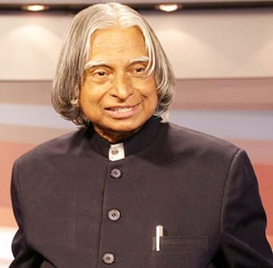

Dr. APJ ABDUL KALAM
Missile Man of India

"A Dream is not that which you see while sleeping, it is something that does not let you sleep."
Timeline
- 1931: Born in Rameshwaram, Tamil Nadu. Avul Pakir
Jainulabdeen Abdul Kalam was born to Jainulabdeen, boat owner and a homemaker Ashiamma. He went to Ramanathapuram Schwartz Matriculation School and worked from an early age to supplement the family income.
- 1954: Graduates in Physics; Kalam graduates in Physics from Saint Joseph's College, Tiruchirappalli. He moves to Madras to pursue further education after graduation.
- 1960: Joins DRDO as a Scientist; Kalam completes his Aeronautical Engineering from Madras Institute of Technology(MIT) and joins the Defence Research and Development Organization (DRDO) as a Scientist.
- 1969: Moves to ISRO; Kalam moves to Indian Space Research Organization where he helms India's first Satellite Launch Vehicle(SLV-III)
- 1980: Lead's India's entry in the Space club; Kalam leads India's efforts to enter the space club by putting the Rohini Satellite in Earth's orbit with the first indigenous SLV-III.
- 1981: Recieves the PADMA BHUSHAN; Kalam recieves the Padma Bhushan for his contribution to the field of science and technology.
- 1980-1990: Develops Prithvi and Agni missiles; As the chief of Integrated Guided Missile Development Programme, he is ccredited with the development and operationalisation of Agni and Prithvi Missiles.
- 1990: Honored with PADMA VIBHUSHAN; Kalam is awarded the Padma Vibhushan, India's second highest civilian honour.
- 1992-1999: Appointed India's Chief Scientific Adviser; Kalm is appointed as the Chief Scientific Adviserto the Prime Minister and the Secretary of the DRDO.
- 1997: Honored with the BHARAT RATNA; Kalam is awarded the Bharat Ratna, India's Highest civilian honour for his contribution to the scientific research and the modernisation of defence technology in India.
- 1998: Spearheads the Pokhran mission; India conducts the Pokhran II nuclear tests with Kalam being one of the forces behind its success.
- 1999-2001: Serves as India's Chief Scientific Advisor.
- 2002-2007: Elected as India's 11nth President; Kalam gets elected as 11nth President of India succeeding KR Narayanan.He won the 2002 presidential election with an electoral vote of 922,884. During his five years in office, he was fondly called 'THE PEOPLE'S PRESIDENT'.
- 2012: Launches what I CAN GIVE Movement; Kalam launches the'What I can give Movement', a peogramme for the Indian youth aimed at defeating corruption.
- July 2017,2015: Passes away in Shillong, Meghalaya; Kalam passes away aged 83, after collapsing because of a cardiac arrest while delivering a lecture at IIM Shillong.
"Don't take rest after your first victory because if you fail in second,
more lips are waiting to say that your first victory was just luck"
-"Dr. APJ ABDUL KALAM"